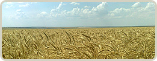
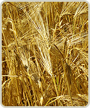

Новости
18.11.2011г.
Уважаемые коллеги! Коллектив Николаевской аграрной компании поздравляет Вас с Днем работника сельского хозяйства!
Дальше
22.10.2011г.
Осенняя посевная завершена! Площадь посева...
Дальше
14.10.2011г.
Во всех подразделениях Николаевской аграрной компании продолжается подготовка почвы...
Дальше
Продукция
Про нас
Наша компания веде діяльність в галузі сільського господарства як на території України так і за її межами. Ми присутні в 19 областях України.
До сфери нашої діяльності входить рослинництво, тваринництво, переробка сільгосппродукції, експорт зернових та продуктів їх переробки, проектування та будівництво елеваторних комплексів, та багато інших суміжних напрямків.
Також наша компанія займається інвестиційною діяльністю в сільськогосподарській галузі в Україні і за кордоном.